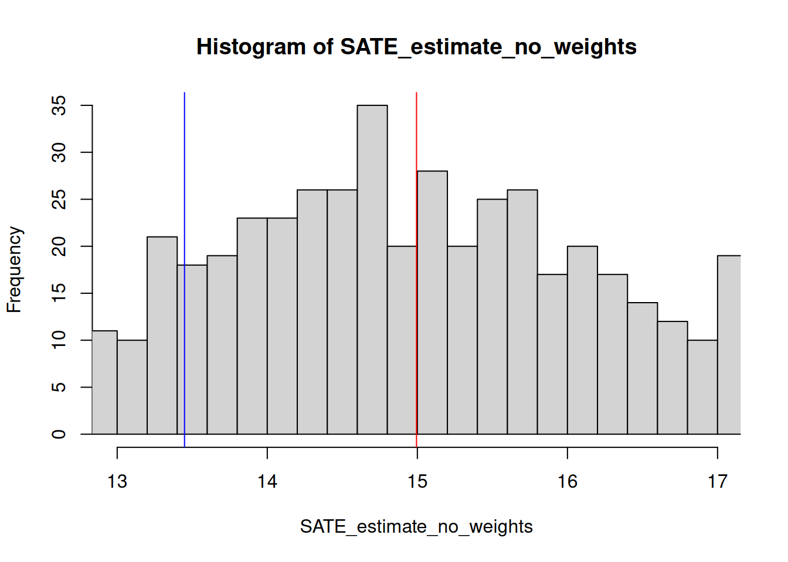
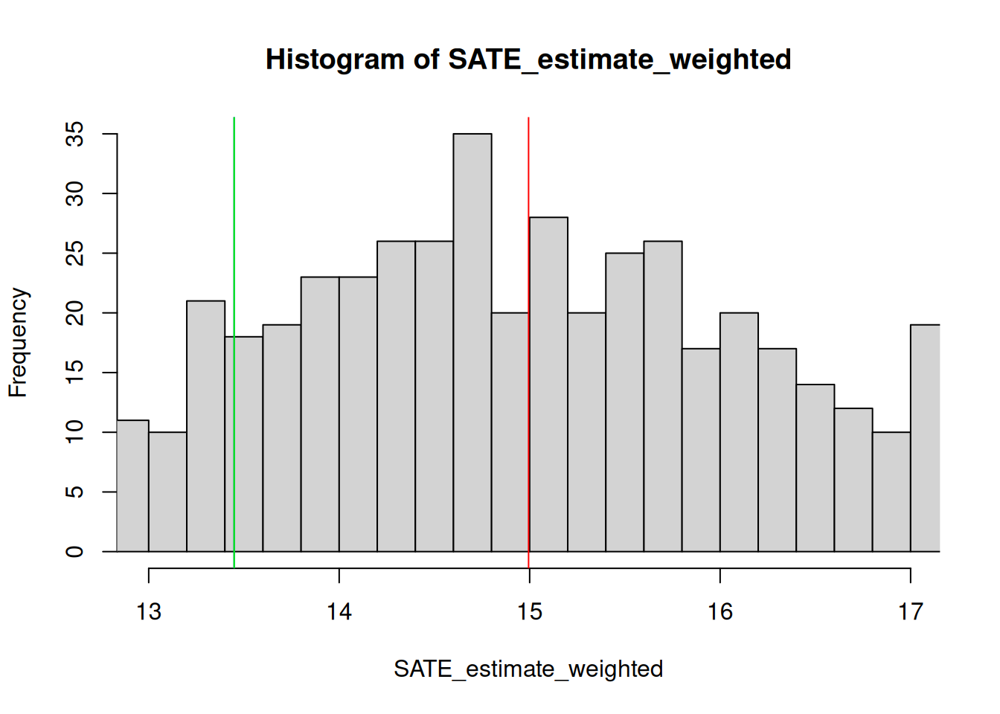
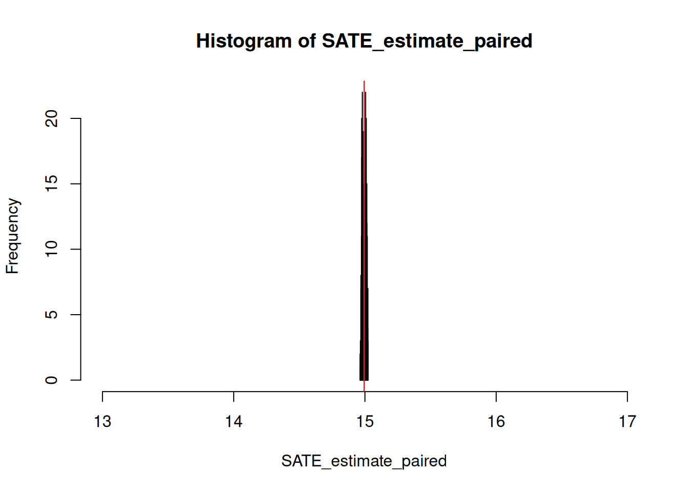
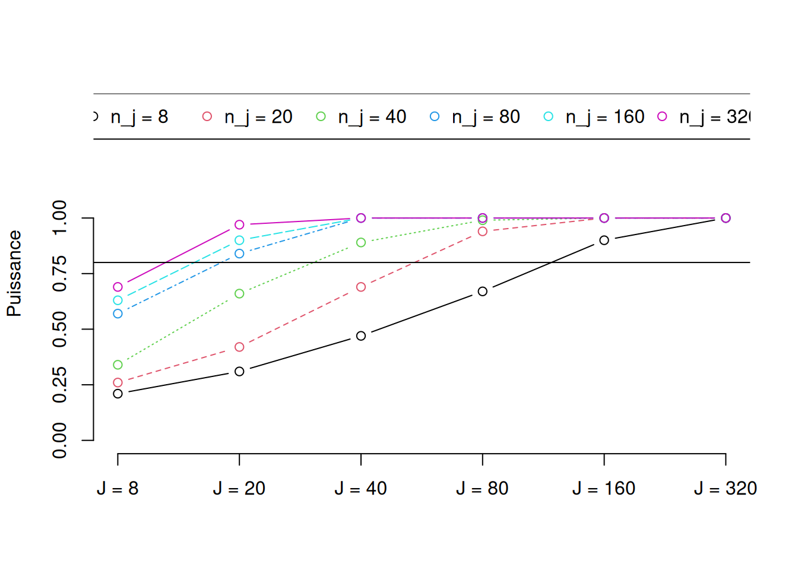
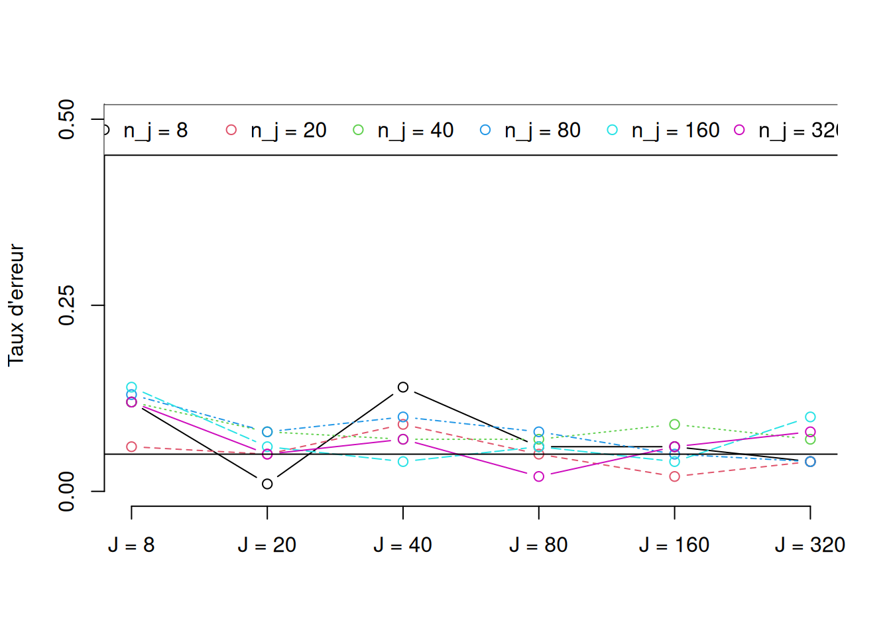
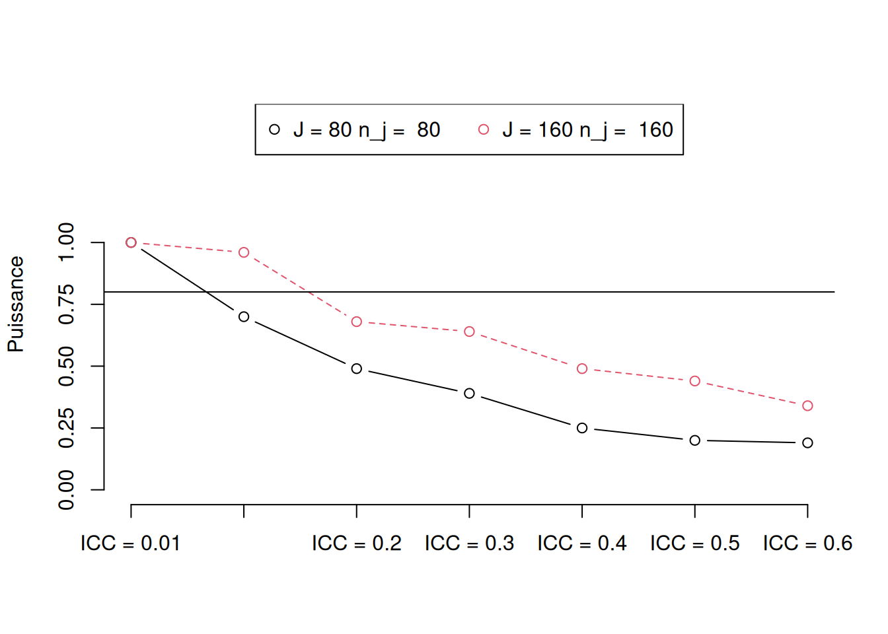
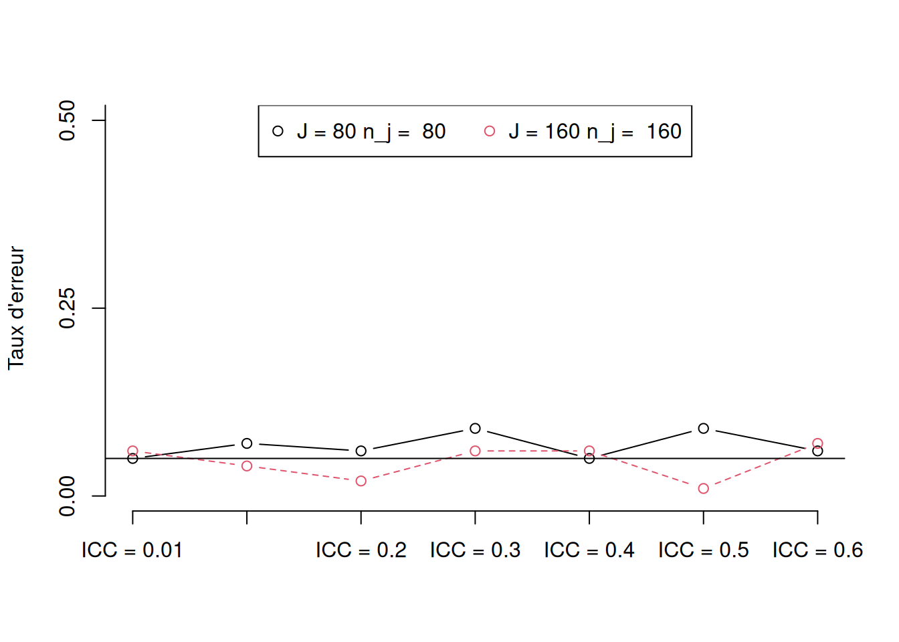

10 choses à savoir sur la randomisation par grappes
Summary
Les expériences randomisées par grappes attribuent des traitements à des groupes, mais mesurent les résultats au niveau des individus qui composent les groupes. Cette divergence entre le niveau d’attribution et le niveau de mesure des résultats pose des défis pour l’estimation et l’inférence. Ce guide couvre les questions clés : la réduction d’information due au regroupement, le biais dû aux tailles inégales des grappes, les effets de contamination intra-grappe, l’analyse basée sur le design vs. basée sur des modèles, l’analyse de puissance et la vérification de l’équilibre.
1 1 Qu’est ce que le découpage par grappe ?
Les expériences randomisées par grappe1 assignent le traitement à des groupes, mais mesurent les résultats au niveau des individus qui composent ces groupes. C’est cette divergence entre le niveau auquel l’intervention est assignée et le niveau auquel les résultats sont constatés qui définit une expérience randomisée par grappe.
Considérons une étude qui assigne de manière aléatoire des villages pour recevoir différents programmes de développement, où le bien-être des ménages dans le village est le résultat d’intérêt. Il s’agit d’une conception par grappe car, bien que le traitement soit assigné au village dans son ensemble, nous nous intéressons aux résultats définis au niveau du ménage. Ou considérons une étude qui assigne de manière aléatoire certains ménages à recevoir différents messages incitant à voter, où nous nous intéressons au comportement de vote des individus. Étant donné que le message est assigné au niveau du ménage, mais que le résultat est défini comme un comportement individuel, cette étude est randomisée par grappe.
Considérons maintenant une étude dans laquelle les villages sont sélectionnés de manière aléatoire, et 10 personnes de chaque village sont assignées au traitement ou au contrôle, et nous mesurons le bien-être de ces individus. Dans ce cas, l’étude n’est pas randomisée par grappe, car le niveau auquel le traitement est assigné et le niveau auquel les résultats sont constatés sont indentiques. Supposons qu’une étude assigne de manière aléatoire des villages à différents programmes de développement et mesure ensuite la cohésion sociale dans le village. Bien qu’il contienne la même procédure de randomisation que notre premier exemple, ce n’est pas une conception par grappe car nous nous intéressons ici aux résultats au niveau du village : l’assignation du traitement et la mesure des résultats sont réalisés au même niveau.
Le découpage par grappe est important pour deux raisons principales. D’une part, le découpage par grappe réduit la quantité d’informations dans une expérience car il restreint le nombre de possibilités pour composer les groupes de traitement et de contrôle, par rapport à une randomisation au niveau individuel. Si ce fait n’est pas pris en compte, nous sous-estimons souvent la variance de notre estimateur, ce qui conduit à une confiance excessive dans les résultats de notre étude. D’autre part, le découpage par grappe soulève la question de savoir comment combiner les informations provenant de différentes parties de la même expérience en une seule quantité. Surtout lorsque les grappes ne sont pas de tailles égales et que les résultats potentiels des unités qu’elles contiennent sont très différents, les estimateurs conventionnels produiront systématiquement une mauvaise réponse en raison des biais. Cependant, plusieurs approches lors des phases de conception et d’analyse permettent de surmonter les défis posés par les conceptions randomisées par grappe.
2 2 Pourquoi le découpage par grappe peut avoir de l’importance I : réduction de l’information
Nous pensons généralement à l’information contenue dans les études en termes de taille d’échantillon et de caractéristiques des unités au sein de l’échantillon. Pourtant, deux études avec exactement la même taille d’échantillon et les mêmes participants pourraient en théorie contenir des quantités d’information très différentes selon que les unités sont groupées par grappe ou non. Cela affectera grandement la précision des inférences que nous faisons sur la base de ces études.
Imaginez une évaluation d’impact avec 10 personnes, où 5 sont assignées au groupe de traitement et 5 au contrôle. Dans une version de l’expérience, le traitement est assigné à des individus - il n’est pas randomisé par grappe. Dans une autre version de l’expérience, les 5 individus aux cheveux noirs et les 5 individus avec une autre couleur de cheveux sont assignés au traitement en tant que groupe. Cette conception a deux groupes : “cheveux noirs” et “autre couleur”.
Une simple application de la règle n parmi k montre pourquoi cela est important. Dans la première version, la procédure de randomisation permet 252 combinaisons différentes de personnes en tant que groupes de traitement et de contrôle. Cependant, dans la seconde version, la procédure de randomisation assigne tous les sujets aux cheveux noirs soit au traitement, soit au contrôle, et ne produit donc jamais que deux façons de combiner les personnes pour estimer un effet.
Tout au long de ce guide, nous illustrerons nos arguments à l’aide d’exemples écrits en R. Vous pouvez copier et coller ceci dans R pour voir comment cela fonctionne.
Code
set.seed(12345)# Définir l'effet moyen de traitement de l'échantillon (sample average treatment effect, SATE)treatment_effect <-1# Définir les identifiants individuels (i)person <-1:10# Définir l'indicateur de grappe (j)hair_color <-c(rep("black",5),rep("brown",5))# Définir le résultat du contrôle (Y0)outcome_if_untreated <-rnorm(n =10)# Définir le résultat du traitement (Y1)outcome_if_treated <- outcome_if_untreated + treatment_effect# Version 1 - non randomisée par grappe# Générer toutes les assignations de traitement possibles sans grappe (Z)non_clustered_assignments <-combn(x =unique(person),m =5)# Estimer l'effet du traitementtreatment_effects_V1 <-apply(X = non_clustered_assignments,MARGIN =2,FUN =function(assignment) { treated_outcomes <- outcome_if_treated[person %in% assignment] untreated_outcomes <- outcome_if_untreated[!person %in% assignment]mean(treated_outcomes) -mean(untreated_outcomes) } )# Estimer l'erreur typestandard_error_V1 <-sd(treatment_effects_V1)# Tracez l'histogramme de toutes les estimations possibles de l'effet du traitementhist(treatment_effects_V1,xlim =c(-1,2.5),breaks =20)
Code
# Version 2 - randomisée par grappe# Générer toutes les assignations de traitement avec grappe selon la couleur de cheveux (Z)clustered_assignments <-combn(x =unique(hair_color),m =1)# Estimer l'effet du traitementtreatment_effects_V2 <-sapply(X = clustered_assignments,FUN =function(assignment) { treated_outcomes <- outcome_if_treated[person %in% person[hair_color==assignment]] untreated_outcomes <- outcome_if_untreated[person %in% person[!hair_color==assignment]]mean(treated_outcomes) -mean(untreated_outcomes) } )# Estimer l'erreur typestandard_error_V2 <-sd(treatment_effects_V2)# Tracez l'histogramme de toutes les estimations possibles de l'effet du traitementhist(treatment_effects_V2,xlim =c(-1,2.5),breaks =20)
Comme le montrent les histogrammes, le découpage par grappe fournit une vue beaucoup plus “grossière” de ce que pourrait être l’effet du traitement. Indépendamment de nombre de fois où l’on randomise le traitement et du nombre de sujets, dans une procédure de randomisation par grappe, le nombre d’estimations possibles de l’effet du traitement sera strictement déterminé par le nombre de grappes assignées aux différentes conditions de traitement. Cela a des implications importantes pour l’erreur type de l’estimateur.
Code
# Comparer les erreurs typeskable(round(data.frame(standard_error_V1,standard_error_V2),2))
standard_error_V1
standard_error_V2
0.52
1.13
Alors que la distribution d’échantillonnage pour l’estimation sans grappe de l’effet du traitement a une erreur type d’environ 0,52, celle de l’estimation par grappe est plus du double, à 1,13. Rappelons que les données initiales des deux études sont identiques, la seule différence entre les études réside dans la façon dont le mécanisme d’assignation de traitement révèle l’information.
Liée à cette question d’information, se pose la question de savoir dans quelle mesure les unités de notre étude varient au sein des grappes et entre celles-ci. Deux études randomisées par grappe avec \(J=10\) villages et \(n_j=100\) personnes par village peuvent avoir des informations différentes à propos de l’effet du traitement sur les individus si, dans une étude, les différences entre villages sont beaucoup plus importantes que les différences de résultats au sein de ces villages. Si, disons, tous les individus d’un village agissaient exactement de la même manière mais que des villages différents montraient des résultats différents, alors nous aurions de l’ordre de 10 éléments d’information : toutes les informations sur les effets causaux dans cette étude seraient au niveau du village. Alternativement, si les individus au sein d’un village agissaient plus ou moins indépendamment les uns des autres, alors nous aurions de l’ordre de 10 \(\times\) 100=1000 éléments d’information.
On peut formaliser l’idée que les grappes fortement dépendantes fournissent moins d’informations que les grappes fortement indépendantes avec le coefficient de corrélation intra-grappe (intra-cluster correlation, ICC). Pour une variable donnée, \(y\), des unités \(i\) et des grappes \(j\), nous pouvons écrire le coefficient de corrélation intra-grappe comme suit :
\[ \text{ICC} \equiv \frac{\text{variance entre grappes dans } y}{\text{variance totale dans } y} \equiv \frac{\sigma_j^2}{\sigma_j^2 + \sigma_i^2} \]
où \(\sigma_i^2\) est la variance entre les unités de la population et \(\sigma_j^2\) est la variance entre les résultats définis au niveau de la grappe. Kish (1965) utilise cette description de dépendance pour définir son idée du “N effectif” d’une étude (dans le contexte d’une enquête, où les échantillons peuvent être regroupés par grappe) :
où le deuxième terme est valide si toutes les grappes ont la même taille (\(n_1 \ldots n_J \equiv n\)).
Si 200 observations provenaient de 10 grappes avec 20 individus dans chaque grappe, où ICC = 0,5, de sorte que 50 % de la variation pourrait être attribuée aux différences inter-grappe (et non aux différences intra-grappe), la formule de Kish suggère que nous avons une taille d’échantillon effective d’environ 19 observations, au lieu de 200.
Comme le suggère la discussion qui précède, le découpage par grappe réduit l’information d’autant plus qu’il a) restreint considérablement le nombre de façons dont un effet peut être estimé, et b) produit des unités dont les résultats sont fortement liés à la grappe dont ils sont membres (i.e. lorsqu’il augmente l’ICC).
3 3 Que faire de la réduction de l’information
Afin de caractériser notre incertitude sur l’effet du traitement, nous souhaitons généralement calculer une erreur type : une estimation de combien l’effet du traitement aurait varié, si nous pouvions répéter l’expérience un très grand nombre de fois et observer les unités alternativement dans leurs états traités et non traités.
Cependant, nous ne sommes jamais en mesure d’observer la véritable erreur type d’un estimateur, et devons donc utiliser des procédures statistiques pour déduire cette quantité inconnue. Les méthodes conventionnelles de calcul des erreurs types ne prennent pas en compte le découpage par grappe, qui, comme nous l’avons noté plus haut, peut fortement augmenter la variation de l’estimation d’une répétition de l’expérience à l’autre. Ainsi, afin d’éviter une confiance excessive dans les résultats expérimentaux, il est important de prendre en compte le découpage par grappe.
Dans cette section, nous nous limitons aux approches dites “basées sur la conception” pour le calcul de l’erreur type. Dans l’approche basée sur la conception, nous simulons des répétitions de l’expérience pour dériver et vérifier les moyens de caractériser la variance de l’estimation de l’effet du traitement, en tenant compte de la randomisation par grappe. Plus loin dans le guide, nous comparons les approches “basées sur la conception” avec celles “basées sur un modèle”. Dans l’approche basée sur un modèle, nous affirmons que les résultats ont été générés selon un modèle de probabilité et que les relations au niveau de la grappe suivent également un modèle de probabilité.
Pour commencer, nous allons créer une fonction qui simule une expérience randomisée par grappe avec une corrélation intra-grappe fixe, et l’utiliser pour simuler certaines données à partir d’une conception randomisée par grappe simple.
Code
make_clustered_data <-function(J =10, n =100, treatment_effect = .25, ICC = .1){## Inspiré par Mathieu et al, 2012, Journal of Applied Psychologyif (J %%2!=0| n %%2!=0) {stop(paste("Le nombre de grappes (J) et la taille des grappes (n) doivent être pairs.")) } Y0_j <-rnorm(J,0,sd = (1+ treatment_effect) ^2*sqrt(ICC)) fake_data <-expand.grid(i =1:n,j =1:J) fake_data$Y0 <-rnorm(n * J,0,sd = (1+ treatment_effect) ^2*sqrt(1- ICC)) + Y0_j[fake_data$j] fake_data$Y1 <-with(fake_data,mean(Y0) + treatment_effect + (Y0 -mean(Y0)) * (2/3)) fake_data$Z <-ifelse(fake_data$j %in%sample(1:J,J /2) ==TRUE, 1, 0) fake_data$Y <-with(fake_data, Z * Y1 + (1- Z) * Y0)return(fake_data)}set.seed(12345)pretend_data <-make_clustered_data(J =10,n =100,treatment_effect = .25,ICC = .1)
Parce que nous avons créé les données nous-mêmes, nous pouvons calculer la véritable erreur type de notre estimateur. Nous générons d’abord la vraie distribution d’échantillonnage en simulant toutes les permutations possibles du traitement et en calculant l’estimation à chaque fois. L’écart type de cette distribution est l’erreur type de l’estimateur.
Code
# Définir le nombre de grappesJ <-length(unique(pretend_data$j))# Générer toutes les manières possibles de combiner les grappes dans un groupe de traitementall_treatment_groups <-with(pretend_data,combn(x =1:J,m = J/2))# Créer une fonction pour estimer l'effetclustered_ATE <-function(j,Y1,Y0,treated_clusters) { Z_sim <- (j %in% treated_clusters)*1 Y <- Z_sim * Y1 + (1- Z_sim) * Y0 estimate <-mean(Y[Z_sim ==1]) -mean(Y[Z_sim ==0])return(estimate)}set.seed(12345)# Appliquer la fonction pour toutes les assignations de traitement possiblescluster_results <-apply(X = all_treatment_groups,MARGIN =2,FUN = clustered_ATE,j = pretend_data$j,Y1 = pretend_data$Y1,Y0 = pretend_data$Y0)true_SE <-sd(cluster_results)true_SE
[1] 0.2567029
Cela donne une erreur type de 0.26. Nous pouvons comparer la véritable erreur type à deux autres types d’erreur type couramment utilisés. La première ignore le découpage par grappe et suppose que la distribution d’échantillonnage est distribuée de manière identique et indépendante selon une distribution normale. Nous appellerons cela l’erreur type IID. Pour prendre en compte le découpage par grappe, nous pouvons utiliser la formule suivante pour l’erreur type :
où \[\sigma^2 = \sum_{j=1}^J \sum_{i=1}^n_j (Y_{ij} - \bar{Y}_{ij})^2 \] (suivant Arceneaux et Nickerson (2009) ). Cet ajustement de l’erreur type IID est communément appelé “erreur type robuste pour grappe” (robust clustered standard error, RCSE).
Lorsque nous ignorons l’assignation par grappe, l’erreur type est trop petite : nous sommes trop confiants quant à la quantité d’informations que nous fournit l’expérience. La RCSE est légèrement plus prudente que la véritable erreur type dans ce cas, mais elle est très proche. L’écart est probablement dû au fait que la RCSE n’est pas une bonne approximation de la véritable erreur type lorsque le nombre de grappes est aussi petit qu’ici. Pour illustrer davantage ce point, nous pouvons comparer une simulation de la véritable erreur type générée par des permutations aléatoires du traitement aux erreurs types IID et RCSE.
Comme l’illustrent ces exemples simples, la RCSE se rapproche de la vérité (l’erreur type simulée) à mesure que le nombre de grappes augmente. Pendant ce temps, l’erreur type ignorant le découpage par grappe (en supposant l’IID) a tendance à être plus petite que les autres erreurs types. Plus l’estimation de l’erreur type est petite, plus les estimations nous semblent précises et plus nous avons de chances de trouver des résultats qui semblent “statistiquement significatifs”. Ceci est problématique : dans ce cas, l’erreur type IID nous amène à être trop confiants dans nos résultats car elle ignore la corrélation intra-grappe, i.e. dans quelle mesure les différences entre les unités peuvent être attribuées à la grappe dont elles sont membres. Si nous estimons les erreurs types à l’aide de techniques qui sous-estiment notre incertitude, nous sommes plus susceptibles de rejeter à tort des hypothèses nulles alors que nous ne le devrions pas.
Une autre façon d’aborder les problèmes que le découpage par grappe introduit dans le calcul des erreurs types est d’analyser les données au niveau de la grappe. Dans cette approche, nous calculons des moyennes ou des sommes de résultats au sein des grappes, puis traitons l’étude comme si elle n’avait eu lieu qu’au niveau de la grappe. Hansen et Bowers (2008) montrent que l’on peut caractériser la distribution de la différence des moyennes à partir de ce que l’on sait de la distribution de la somme du résultat dans le groupe de traitement, qui varie d’une assignation de traitement à l’autre.
Code
# Agréger les données unitaires au niveau de la grappe# Somme des résultats au niveau de la grappeYj <-tapply(pretend_data$Y,pretend_data$j,sum)# Indicateur d'assignation globale au niveau de la grappeZj <-tapply(pretend_data$Z,pretend_data$j,unique)# Calculer la taille de grappe uniquen_j <-unique(as.vector(table(pretend_data$j)))# Calculer la taille totale de l'échantillon (nos unités sont maintenant en grappe)N <-length(Zj)# Générer l'identifiant de la grappej <-1:N# Calculer le nombre de grappes traitéesJ_treated <-sum(Zj)# Faire une fonction pour l'estimateur "différence des moyennes" au niveau de la grappe (Voir Hansen & Bowers 2008)cluster_difference <-function(Yj,Zj,n_j,J_treated,N){ ones <-rep(1, length(Zj)) ATE_estimate <-crossprod(Zj,Yj)*(N/(n_j*J_treated*(N-J_treated))) -crossprod(ones,Yj)/(n_j*(N-J_treated))return(ATE_estimate)}# Étant donné des grappes de taille égale et sans bloc,# ceci est identique à la différence des moyennes au niveau unitaireATEs <-colMeans(data.frame(cluster_level_ATE =cluster_difference(Yj,Zj,n_j,J_treated,N),unit_level_ATE =with(pretend_data,mean(Y[Z==1])-mean(Y[Z==0]))))knitr::kable(data.frame(ATEs),align ="c")
ATEs
cluster_level_ATE
0.3417229
unit_level_ATE
0.3417229
Afin de caractériser l’incertitude sur l’ATE au niveau de la grappe, nous pouvons exploiter le fait que le seul élément aléatoire de l’estimateur est maintenant le produit croisé entre le vecteur d’assignation au niveau de la grappe et le résultat au niveau de la grappe, \(\mathbf{Z}^\top\mathbf{Y}\), mis à l’échelle par une constante. Nous pouvons estimer la variance de cette composante aléatoire par permutation du vecteur d’assignation ou par une approximation de la variance, en supposant que la distribution d’échantillonnage suit une distribution normale.
Code
# Approximation de la variance à l'aide de l'hypothèse de loi normalenormal_sampling_variance <- (N/(n_j*J_treated*(N-J_treated)))*(var(Yj)/n_j)# Approximation de la variance à l'aide de permutationsset.seed(12345)sampling_distribution <-replicate(10000,cluster_difference(Yj,sample(Zj),n_j,J_treated,N))ses <-data.frame(sampling_variance =c(sqrt(normal_sampling_variance),sd(sampling_distribution)),p_values =c(2*(1-pnorm(abs(ATEs[1])/sqrt(normal_sampling_variance),mean=0)),2*min(mean(sampling_distribution>=ATEs[1]),mean(sampling_distribution<=ATEs[1])) ))rownames(ses) <-c("Approximation avec loi normale", "Permutations")knitr::kable(ses)
sampling_variance
p_values
Approximation avec loi normale
0.2848150
0.2302145
Permutations
0.2825801
0.2792000
Cette approche au niveau des grappes a l’avantage de caractériser correctement l’incertitude sur l’effet de traitement pour une randomisation par grappe, sans avoir à utiliser l’erreur type RCSE pour les estimations au niveau de l’unité, qui est trop permissive pour les petits N. En effet, le taux de faux positifs des tests basés sur une erreur type RCSE a tendance à être incorrect lorsque le nombre de grappes est petit, ce qui conduit à un excès de confiance. Comme nous le verrons ci-dessous, cependant, lorsque le nombre de grappes est très petit (\(J=4\)), l’approche au niveau de la grappe est trop conservatrice, rejetant la valeur nulle avec une probabilité de 1. Un autre inconvénient de l’approche au niveau des grappes est qu’elle ne permet pas d’estimer les quantités d’intérêt au niveau unitaire, telles qu’un effet de traitement hétérogène.
4 4 Pourquoi le découpage par grappe peut avoir de l’importance II : différentes tailles de grappe
Lorsque les grappes sont de tailles différentes, s’ouvre une classe unique de problèmes liés à l’estimation de l’effet du traitement. Surtout lorsque la taille de la grappe est liée d’une manière ou d’une autre aux résultats potentiels des unités qui la composent, de nombreux estimateurs conventionnels de l’effet moyen du traitement pour l’échantillon (sample average treatment effect, SATE) peuvent être biaisés.
Pour se fixer les idées, imaginez une intervention ciblée sur des entreprises de tailles différentes, qui vise à augmenter la productivité des travailleurs. En raison des économies d’échelle, la productivité des employés des grandes entreprises augmente de façon beaucoup plus proportionnelle comparé à celle des employés des petites entreprises. Imaginez que l’expérience comprend 20 entreprises dont la taille varie d’entrepreneurs individuels à de grandes entreprises de plus de 500 employés. La moitié des entreprises est assignée au traitement et l’autre moitié est assignée au contrôle. Les résultats sont définis au niveau de l’employé.
Code
set.seed(1000)# Nombre d'entreprisesJ <-20# Employés par entreprisen_j <-rep(2^(0:(J/2-1)),rep(2,J/2))# Nombre total d'employésN <-sum(n_j)# 2046# identifiant unique pour chaque employé (unité)i <-1:N# identifiant unique pour chaque entreprise (grappe / cluster)j <-rep(1:length(n_j),n_j)# effets de traitement spécifiques à l'entreprisecluster_ATE <- n_j^2/10000# Productivité pour les non-traitésY0 <-rnorm(N)# Productivité pour les traitésY1 <- Y0 + cluster_ATE[j]# Effet moyen du traitement pour l'échantillon réel(true_SATE <-mean(Y1-Y0))
[1] 14.9943
Code
# Corrélation entre la taille de l'entreprise et la taille de l'effetcor(n_j,cluster_ATE)
[1] 0.961843
Comme nous le voyons, il existe une forte corrélation entre l’effet du traitement et la taille des grappes. Simulons maintenant 1000 analyses de cette expérience, en permutant le vecteur d’assignation de traitement à chaque fois, et en prenant la différence non pondérée des moyennes comme une estimation de l’effet moyen du traitement pour l’échantillon.
Code
set.seed(1234)# SATE non pondéréSATE_estimate_no_weights <-NAfor(i in1:1000){# Assignation aléatoire par grappe de la moitié des entreprises Z <- (j %in%sample(1:J,J/2))*1# Révéler les résultats Y <- Z*Y1 + (1-Z)*Y0# Estimer le SATE SATE_estimate_no_weights[i] <-mean(Y[Z==1])-mean(Y[Z==0]) }# Générer un histogramme des effets estiméshist(SATE_estimate_no_weights,xlim =c(true_SATE-2,true_SATE+2),breaks =100)# Ajouter l'estimation attendue du SATE à l'aide de cet estimateurabline(v=mean(SATE_estimate_no_weights),col="blue")# Et ajoutez le vrai SATEabline(v=true_SATE,col="red")

L’histogramme montre la distribution d’échantillonnage de l’estimateur, avec le vrai SATE en rouge et son estimation non pondérée en bleu. L’estimateur est biaisé : en espérance, on ne récupère pas le vrai SATE, on le sous-estime. Intuitivement, on pourrait s’attendre à juste titre à ce que le problème soit lié au poids relatif des grappes dans le calcul de l’effet du traitement. Cependant, dans cette situation, prendre la différence de la moyenne pondérée du résultat entre les grappes traitées et les grappes de contrôle n’est pas suffisant pour fournir un estimateur sans biais.
Code
set.seed(1234)# Moyennes pondérées des grappesSATE_estimate_weighted <-NAfor(i in1:1000){# Définir les grappes assignées au traitement treated_clusters <-sample(1:J,J/2,replace = F)# Générer un vecteur d'assignation au niveau de l'unité Z <- (j %in% treated_clusters)*1# Révéler les résultats Y <- Z*Y1 + (1-Z)*Y0# Calculer les poids des grappes treated_weights <- n_j[1:J%in%treated_clusters]/sum(n_j[1:J%in%treated_clusters]) control_weights <- n_j[!1:J%in%treated_clusters]/sum(n_j[!1:J%in%treated_clusters])# Calculer les moyennes de chaque grappe treated_means <-tapply(Y,j,mean)[1:J%in%treated_clusters] control_means <-tapply(Y,j,mean)[!1:J%in%treated_clusters]# Calculer l'estimation pondérée par grappe du SATE SATE_estimate_weighted[i] <-weighted.mean(treated_means,treated_weights) -weighted.mean(control_means,control_weights)}# Générer un histogramme des effets estiméshist(SATE_estimate_weighted,xlim =c(true_SATE-2,true_SATE+2),breaks =100)# Ajouter l'estimation attendue du SATE non pondéréabline(v=mean(SATE_estimate_no_weights),col="blue")# Ajouter l'estimation attendue du SATE pondéréabline(v=mean(SATE_estimate_weighted),col="green")# Et ajoutez le vrai SATEabline(v=true_SATE,col="red")

L’histogramme montre la distribution d’échantillonnage de l’estimateur pondéré, avec le vrai SATE en rouge et l’estimation non pondérée en bleu, et l’estimation pondérée en vert. En espérance, la version pondérée de l’estimateur donne en fait la même estimation du SATE que la version non pondérée. Quelle est la nature du biais ?
Au lieu d’assigner le traitement à la moitié des groupes et de comparer les résultats au niveau des groupes de traitement et de contrôle, imaginez que nous avons jumelé chaque groupe avec un autre groupe et que nous en avons assigné un au traitement au sein de chaque paire. L’effet du traitement est alors l’agrégat des estimations au niveau de la paire. Ceci est analogue à la procédure d’assignation aléatoire complète employée ci-dessus, dans laquelle \(J/2\) entreprises ont été assignées au traitement. Maintenant, nous allons plutôt nous référer au \(k\)ième des \(m\) paires, où \(2m = J\).
Compte tenu de cette configuration, Imai, King et Nall (2009) donnent la définition formelle suivante du biais dans l’estimateur de la différence des moyennes pondérée par grappe
où \(l = 1,2\) indexe les grappes au sein de chaque paire. Ainsi, \(n_{1k}\) fait référence au nombre d’unités dans la première grappe de la \(k\)’ième paire de grappes.
Cette expression indique qu’un biais dû à des tailles de grappes inégales survient si et seulement si deux conditions sont remplies. Premièrement, les tailles d’au moins une paire de grappes doivent être inégales : lorsque \(n_{1k}=n_{2k}\) pour tous les \(k\), le terme de biais est réduit à 0. Deuxièmement, les tailles d’effet pondérées d’au moins une paire de grappes doivent être inégales : quand \(\sum_{i = 1}^{n_{1k}}(Y_{i1k}(1)-Y_{i1k}(0))/n_{1k} = \sum_{i = 1}^{n_{ 2k}}(Y_{i2k}(1)-Y_{i2k}(0))/n_{2k}\) pour tous les \(k\), le biais est également réduit à 0.
5 5 Que faire des différentes tailles de grappe ?
Comme le suggère l’expression ci-dessus, afin de réduire à près de 0 le biais des tailles de grappes inégales, il suffit de mettre par paire les grappes qui sont de taille égale ou ont des résultats potentiels presque identiques.
Nous démontrons cette approche ci-dessous en utilisant les mêmes données que celles que nous avons examinées dans l’exemple d’une expérience hypothétique de productivité des employés randomisée par entreprise.
Code
set.seed(1234)# Créez une fonction qui apparie en fonction de la taillepair_sizes <-function(j,n_j){# Trouvez toutes les tailles uniques unique_sizes <-unique(n_j)# Trouver le nombre de tailles uniques N_unique_sizes <-length(unique_sizes)# Générer une liste de candidats pour l'appariement pour chaque taille de grappe possible_pairs <-lapply(unique_sizes,function(size){which(n_j==size)})# Trouver le nombre de toutes les paires possibles (m) m_pairs <-length(unlist(possible_pairs))/2# Générer un vecteur avec des identifiants uniques au niveau de la paire pair_indicator <-rep(1:m_pairs,rep(2,m_pairs))# Apparier de manière aléatoire les unités de grappes de même taille pair_assignment <-unlist(lapply( possible_pairs,function(pair_list){sample(pair_indicator[unlist(possible_pairs)%in%pair_list])}))# Générer un vecteur indiquant la kième paire pour chaque i unité pair_assignment <- pair_assignment[match(x = j,table =unlist(possible_pairs))]return(pair_assignment)}pair_indicator <-pair_sizes(j = j , n_j = n_j)SATE_estimate_paired <-NAfor(i in1:1000){# Parcourez maintenant le vecteur d'assignation des paires pair_ATEs <-sapply(unique(pair_indicator),function(pair){# Pour chaque paire, assignez-en une de manière aléatoire au traitement Z <- j[pair_indicator==pair] %in%sample(j[pair_indicator==pair],1)*1# Révéler les résultats potentiels de la paire Y <- Z*Y1[pair_indicator==pair] + (1-Z)*Y0[pair_indicator==pair] clust_weight <-length(j[pair_indicator==pair])/N clust_ATE <-mean(Y[Z==1])-mean(Y[Z==0])return(c(weight = clust_weight, ATE = clust_ATE)) }) SATE_estimate_paired[i] <-weighted.mean(x = pair_ATEs["ATE",],w = pair_ATEs["weight",])}# Générer un histogramme des effets estiméshist(SATE_estimate_paired,xlim =c(true_SATE-2,true_SATE+2),breaks =100)# Ajouter l'estimation attendue du SATE par paireabline(v=mean(SATE_estimate_paired),col="violet")# Et ajoutez le vrai SATEabline(v=true_SATE,col="red")

Code
# L'estimateur par paire est beaucoup plus proche du vrai STATEkable(round(data.frame(true_SATE = true_SATE,paired_SATE =mean(SATE_estimate_paired),weighted_SATE =mean(SATE_estimate_weighted),unweighted_SATE =mean(SATE_estimate_no_weights)),2))
true_SATE
paired_SATE
weighted_SATE
unweighted_SATE
14.99
14.99
13.45
13.45
Malgré des tailles de grappe inégales, le biais est complètement éliminé par cette technique : en espérance, l’estimateur par paire recouvre le véritable effet moyen du traitement pour l’échantillon, alors que les estimateurs de différence des moyennes pondérées et non pondérées sont biaisés.
Notez également que la variance dans la distribution d’échantillonnage est beaucoup plus faible pour l’estimateur par paire, donnant lieu à des estimations beaucoup plus précises. Ainsi, l’appariement promet non seulement de réduire les biais, mais peut également grandement atténuer le problème de réduction de l’information induit par le découpage par grappe.
Cependant, un tel appariement de paires avant randomisation impose certaines contraintes à l’étude, dont certaines peuvent être difficiles à respecter dans la pratique. Par exemple, il peut être difficile voire impossible de trouver des paires parfaitement assorties pour chaque taille de grappe, en particulier lorsqu’il y a plusieurs traitements (tels que, au lieu de paires, le traitement est randomisé sur des triplets ou des quadruplés). Dans de tels cas, les chercheurs peuvent adopter d’autres solutions, telles que la création de paires en faisant correspondre les covariables observées avant la randomisation, de sorte que, par exemple, la similarité intra-paire des covariables observées est maximisée. Imai, King et Nall (2009) recommandent un modèle mixte pour l’estimation par paire post-randomisation et énoncent certaines des hypothèses qui doivent être formulées pour que ces estimations soient valides.
6 6 Pourquoi le découpage par grappe peut avoir de l’importance III : les effets de contamination au sein de la grappe
Dans de nombreuses ou la plupart des expériences, nous aimerions estimer l’effet causal moyen du traitement au sein d’une population ou d’un échantillon. Soit \(Y_{z_i}\) le résultat \(Y\) de l’unité \(i\) lorsqu’elle est assignée au statut de traitement \(z_i \in \{1,0\}\), nous pouvons définir cette quantité – l’effet moyen du traitement (average treatment effect, ATE) – comme valeur en espérance de la différence entre l’échantillon lorsqu’il est assigné au traitement, \(Y_1\) et l’échantillon lorsqu’il est assigné au contrôle \(Y_0\) : \(E[Y_1 - Y_0]\).
Cependant, il se peut que le résultat d’une unité dépende du statut de traitement \(z_j\) d’une autre unité, \(j\), au sein de la même grappe. Dans ce cas, nous désignons les résultats potentiels \(Y_{z_j,z_i} \in \{ Y_{00}, Y_{10}, Y_{01}, Y_{11} \}\), où une unité non traitée avec un voisin de grappe non traité est définie comme \(Y_{00}\), une unité non traitée avec un voisin de grappe traité comme \(Y_{10}\), une unité traitée avec un voisin de grappe non traité comme \(Y_{01}\), et une unité traitée avec un voisin de grappe traité comme \(Y_{11}\). Lorsque nous menons une expérience randomisée par grappe, nous supposons généralement que le résultat d’une unité n’est pas fonction du statut de traitement des unités avec lesquelles elle partage une grappe, ou formellement \(Y_{01}=Y_{11}=Y_1\) et \(Y_{10}=Y_{00 }=Y_0\). Pourtant, pour toutes sortes de raisons, cela peut ne pas être le cas : leurs résultats peuvent être très différents si la grappe est ou non assignée au traitement, ou si certaines personnes se retrouvent dans la même grappe.
Considérons une expérience dans laquelle cinq paires d’étudiants vivant en dortoirs sont assignées de manière aléatoire à recevoir ou non une subvention alimentaire, et leur bien-être déclaré est le résultat d’intérêt. Supposons que quatre élèves soient végétariens (V) et six mangeurs de viande (M). Lorsqu’un couple VV, MM ou VM est assigné au contrôle, ils ne reçoivent pas la subvention et leur bien-être n’est pas affecté. Cependant, lorsqu’ils sont assignés au traitement, les couples VM se querellent et cela réduit leur bien-être, alors que les paires VV et MM ne se disputent pas et ne sont affectés que par le traitement. Notons \(x_k \in \{0,1\}\) un indicateur pour savoir si la paire est incompatible, où le résultat de l’unité est noté \(Y_{z_j,z_j,x_k}\). Cela implique que \(Y_{110} = Y_1\) et \(Y_{000} = Y_{001} = Y_0\), alors que \(Y_{111} \neq Y_1\). Pour comprendre en quoi cela est important, simulons une telle expérience.
Code
# Créer des données expérimentalesN <-10types <-c(rep("V",.4*N),rep("M",.6*N))ID <-1:length(types)baseline <-rnorm(length(ID))# Le véritable effet du traitement est de 5true_ATE <-5# Si une paire ne correspond pas (VM, MV), elle obtient un effet de contamination de -10spillover_or_not <-function(type_i,type_j){ifelse(type_i==type_j,yes =0,no =-10)}# Une fonction pour former les pairesform_pairs <-function(ID,types){ N <-length(ID) k <-rep(1:(N/2),2) pair_place <-rep(c(1,2),c(N/2,N/2)) ID_draw <-sample(ID) type_i <- types[ID_draw] pair_1 <- type_i[pair_place==1] pair_2 <- type_i[pair_place==2] ID_j_1 <- ID_draw[pair_place==1] ID_j_2 <- ID_draw[pair_place==2] type_j <-c(pair_2,pair_1) j <-c(ID_j_2,ID_j_1)return(data.frame(i = ID_draw,j = j,k = k, type_i = type_i, type_j = type_j))}# Une fonction pour assigner le traitement et révéler le résultatassign_reveal_est <-function(k,i,effect,spillover){ Z <- (k %in%sample(k,N/2))*1 Y <- baseline[i] + Z*effect + Z*spillovermean(Y[Z==1])-mean(Y[Z==0])}# Une fonction pour simuler l'expériencesimulate_exp <-function(){ data <-form_pairs(ID,types) spillover <-spillover_or_not(data$type_i,data$type_j) estimate <-assign_reveal_est(k = data$k,effect = true_ATE,spillover = spillover,i = data$i)return(estimate)}# Estimer les effets mille foisest_effects <-replicate(n =1000,expr =simulate_exp())# Tracez un histogramme des estimations, l'ATE attendu en bleu et l'ATE réel en rougehist(est_effects,breaks =100,xlim =c(-7,7))abline(v = true_ATE,col ="red")abline(v =mean(est_effects,na.rm = T),col ="blue")
Comme le montre le graphique ci-dessus, il s’agit d’un estimateur biaisé du véritable effet du traitement au niveau individuel, \(Y_{01} - Y_{00}\). En espérance, nous estimons un effet proche de 0, obtenant des effets très négatifs dans près de la moitié des simulations de cette expérience. Le point clé ici est que le paramètre est modifié : plutôt que l’ATE, nous obtenons une combinaison du véritable effet du traitement parmi ceux qui sont compatibles (ne subissent pas d’effets de contamination) \(E[Y_{110}-Y_{00x_k}]\), et de l’effet combiné du traitement et de la contamination pour ceux qui ne sont pas compatibles \(E[Y_{111}-Y_{00x_k}]\). Mais surtout, nous ne pouvons pas identifier l’impact de la contamination, \(E[Y_{101}-Y_{00x_k}]\), indépendamment de l’effet direct. En effet, c’est une randomisation par grappe : il n’est pas possible d’observer \(Y_{101}\) dans un schéma randomisé par grappe, car toutes les unités d’une grappe sont toujours traitées. De manière générale, ce problème est vrai pour toute étude randomisée par grappe : pour affirmer que nous identifions l’effet au niveau individuel du traitement, nous devons supposer que \(Y_{11}=Y_{1}\) et \(Y_{00}=Y_{0}\).
7 7 Que faire des effets de contamination intra-grappe
S’il y a de bonnes raisons de croire que des effets de contamination intra-grappe se produisent, les chercheurs peuvent alors adopter des approches différentes selon la manière dont les grappes sont formées. Dans certaines études, les chercheurs doivent eux-mêmes trier les unités en grappe à des fins d’expérimentation : par exemple, dans une étude portant sur un programme professionnel, le chercheur peut être en mesure de décider qui est recruté dans quelle classe. Dans de tels cas, si le chercheur peut faire des hypothèses plausibles sur les effets de contamination, alors l’effet du traitement au niveau individuel peut être récupérable.
Prenons l’exemple d’un chercheur qui a mené l’étude précédente ci-dessus et qui a correctement supposé que des contaminations se produiraient entre des paires non compatibles. Dans ce cas, le chercheur peut récupérer le véritable effet du traitement individuel en formant des grappes qui ne sont pas sujets aux effets de contamination.
Dans le cas où les chercheurs ne sont pas en mesure de contrôler la formation des grappes, ils peuvent encore étudier l’hétérogénéité au niveau de la grappe pour l’effet du traitement comme moyen de comprendre les effets de contamination possibles. Cependant, dans les deux cas, des hypothèses doivent être formulées sur la nature des effets de contamination. À proprement parler, ceux-ci ne peuvent pas être identifiés de manière causale en raison de l’inobservabilité des résultats \(Y_{01}\) et \(Y_{10}\). En fin de compte, il faudrait combiner des schémas de randomisation avec grappe et sans grappe afin d’estimer les effets de contamination intra-grappe, \(Y_{11} - Y_{01}\) et \(Y_{01} - Y_{00}\). Par conséquent, afin d’interpréter correctement les résultats, les chercheurs doivent être prudents lors de la définition de leur paramètre et tenir compte du potentiel de contamination intra-grappe.
8 8 Performance des études par grappe basées sur une conception vs. un modèle
Dans notre discussion sur la perte d’informations, nous avons évalué les approches qui nécessitent (1) que le traitement soit randomisé comme prévu et (2) que le traitement assigné à une unité n’a pas changé les résultats potentiels pour toute autre unité. Dans les cas où ces hypothèses peuvent être violées, il est parfois plus simple de spécifier des modèles statistiques qui tentent de décrire les caractéristiques d’une conception complexe. Même si nous ne considérons pas le modèle comme une description scientifique d’un processus connu, cela peut être une manière plus informative et flexible d’analyser une expérience plutôt que de dériver de nouvelles expressions complexes pour un estimateur basé sur une conception.
Dans les approches basées sur un modèle, la distribution d’échantillonnage d’un estimateur est approchée à l’aide d’une distribution de probabilité pour caractériser notre incertitude sur des quantités inconnues, telles que le véritable effet du traitement ou la véritable moyenne du résultat au niveau de la grappe. De telles approches sont appelées “basées sur un modèle”, car elles décrivent les relations causales comme résultant de distributions de probabilité interdépendantes. Souvent, ces approches utilisent des “modèles à plusieurs niveaux”, dans lesquels des paramètres inconnus - tels que les différences inter-grappe - sont eux-mêmes compris comme résultant de distributions de probabilité. Ainsi, par exemple, il pourrait y avoir un modèle pour les résultats au niveau individuel, dont l’ordonnée à l’origine et/ou les coefficients varient d’un groupe à l’autre. De cette manière, il est possible de modéliser “l’effet d’être une unité dans la grappe A”, séparément de l’estimation de l’effet du traitement. L’avantage de telles approches est qu’elles permettent une “mise en commun partielle” de la variance dans la population et de la variance entre les grappes. Lorsqu’une grappe donnée est mal estimée, elle contribue moins à l’estimation, et vice versa. De tels modèles fonctionnent donc souvent bien dans des situations où il y a très peu de données dans certaines grappes : grâce à la spécification d’une distribution a posteriori bayésienne, elles sont capables d’exploiter les informations de toutes les parties de l’étude. Le compromis est que de tels modèles à fortes hypothèses ne sont corrects que dans la mesure où les hypothèses qui les sous-tendent sont correctes.
Ici, nous montrons que l’effet estimé est le même que nous utilisions une simple différence des moyennes (via la méthode des moindres carrés) ou un modèle à plusieurs niveaux pour cet essai randomisé par grappe très simplifié.
Les intervalles de confiance diffèrent même si les estimations sont identiques — et il existe plusieurs façons de calculer les intervalles de confiance et les tests d’hypothèse pour les modèles à plusieurs niveaux. Le logiciel R (Bates, Maechler, Bolker, et al. (2014a), Bates, Maechler, Bolker, et al. (2014b)) inclut trois méthodes par défaut et Gelman et Hill (2007) recommandent l’échantillonnage de Monte-Carlo par chaînes de Markov (MCMC) à partir de la distribution postérieure implicite. Ici, nous nous concentrons sur la méthode de Wald uniquement parce qu’elle est la plus rapide à calculer.
Code
# Cette fonction calcule les intervalles de confiance pour des modèles linéaires# avec des matrices de variance-covariance personnaliséesconfint_HC<-function (coefficients, df, level =0.95, vcov_mat, ...) { a <- (1- level)/2 a <-c(a, 1- a) fac <-qt(a, df) ses <-sqrt(diag(vcov_mat)) coefficients + ses %o% fac}simple_OLS_CI <-confint_HC(coefficients =coef(simple_OLS),vcov_mat =RCSE(model = simple_OLS,cluster = J_30_clusters$j,return_cov =TRUE),df = simple_OLS$df.residual)["Z",]multi_wald_CI <- lme4::confint.merMod( multilevel,parm ="Z",method ="Wald")["Z",]multi_profile_CI <- lme4::confint.merMod( multilevel,parm =4,method ="profile")["Z",]knitr::kable(round(rbind(Design_Based_CI = simple_OLS_CI,Model_Based_Wald_CI = multi_wald_CI,Model_Based_Profile_CI = multi_profile_CI),3))
2.5 %
97.5 %
Design_Based_CI
-0.416
0.156
Model_Based_Wald_CI
-0.421
0.161
Model_Based_Profile_CI
-0.420
0.161
Nous pouvons calculer une estimation de l’ICC directement à partir des quantités du modèle (la variance de la distribution normale antérieure qui représente les différences inter-grappe à l’origine divisée par la variance totale de la distribution normale postérieure).
Afin d’évaluer les performances de cette approche basée sur un modèle, par opposition aux approches par agrégat de grappe ou avec une erreur type RCSE décrites ci-dessus, nous pouvons vérifier à quelle fréquence les différentes approches rejettent à tort l’hypothèse nulle stricte d’absence d’effet pour toute unité, lorsque nous savons que l’hypothèse nulle d’absence d’effet est vraie.
Pour ce faire, nous écrivons une fonction qui rompt d’abord la relation entre l’assignation du traitement et le résultat en mélangeant aléatoirement l’assignation, puis qui teste si 0 se trouve dans l’intervalle de confiance à 95 % pour chacune des trois approches, comme il se doit. Rappelez-vous que les tests valides auraient des taux d’erreur dans un intervalle égal à $2 erreur type de simulation de 0,95 $- cela signifierait qu’une hypothèse nulle correcte serait rejetée pas plus de 5 % du temps.
Code
# Créer une fonction pour vérifier si 0 se trouve dans l'intervalle de confiance pour les approches :# par agrégat de grappe, avec une erreur type RCSE ou avec un modèle multi-niveauxsim_0_ate <-function(J,Y) {# Rendre la vraie relation entre le traitement et les résultats égale à zéro# en mélangeant Z mais sans révéler de nouveaux résultats potentiels z.sim <-sample(1:max(J), max(J) /2) Z_new <-ifelse(J %in% z.sim ==TRUE, 1, 0)# Estimation à l'aide du modèle linéaire pour la RCSE linear_fit <-lm(Y ~ Z_new) linear_RCSE <-RCSE(model = linear_fit,cluster = J,return_cov =TRUE) linear_CI <-confint_HC(coefficients =coef(linear_fit),vcov_mat = linear_RCSE,df = linear_fit$df.residual)["Z_new",]# Vérifiez si l'intervalle de confiance est borné par 0 zero_in_CI_RCSE <- (0>= linear_CI[1]) & (0<= linear_CI[2])# Estimation à l'aide d'une approche par agrégat de grappe (Hansen et Bowers 2008) Yj <-tapply(Y, J, sum) Zj <-tapply(Z_new, J, mean) m0 <-unique(table(J)) n <-length(Zj) nt <-sum(Zj)# Faire le test basé sur Hansen et Bowers 2008 pour la différence des moyennes# avec l'assignation au niveau de la grappe (en supposant des grappes de même taille) ones <-rep(1, length(Yj)) dp <-crossprod(Zj,Yj) * (n / (m0 * nt * (n - nt))) -crossprod(ones,Yj) / (m0 * (n - nt)) obs_ATE <- dp[1,1]# p-valeur bilatérale pour le test d'hypothèse nulle d'absence d'effet Vdp <- (n / (m0 * nt * (n - nt))) * (var(Yj) / m0) HB_pval <-2* (1-pnorm(abs(obs_ATE) /sqrt(Vdp)))# Vérifiez si la p-valeur est supérieure à 0,05 zero_not_rej_HB <- HB_pval >= .05# Estimation à l'aide du modèle multi-niveaux multilevel_fit <-lmer(Y ~ Z_new + (1| J),control =lmerControl(optimizer ='bobyqa'),REML =FALSE) multilevel_CI <- lme4:::confint.merMod( multilevel_fit,parm ="Z_new",method ="Wald")# Vérifiez si l'intervalle de confiance est borné par 0 zero_in_CI_multilevel <- (0>= multilevel_CI[1]) & (0<= multilevel_CI[2])return(c(ATE =fixef(multilevel_fit)["Z_new"],zero_in_CI_RCSE = zero_in_CI_RCSE,zero_not_rej_HB = zero_not_rej_HB,zero_in_CI_multilevel = zero_in_CI_multilevel))}# Maintenant, simulez chacune des estimations 1000 foisJ_4_comparison <-replicate(1000, sim_0_ate(J = J_4_clusters$j, Y = J_4_clusters$Y))J_4_error_rates <-apply(J_4_comparison,1,mean)J_4_error_rates[-1] <-1-J_4_error_rates[-1]J_10_comparison <-replicate(1000, sim_0_ate(J = J_10_clusters$j, Y = J_10_clusters$Y))J_10_error_rates <-apply(J_10_comparison,1,mean)J_10_error_rates[-1] <-1-J_10_error_rates[-1]J_30_comparison <-replicate(1000, sim_0_ate(J = J_30_clusters$j, Y = J_30_clusters$Y))J_30_error_rates <-apply(J_30_comparison,1,mean)J_30_error_rates[-1] <-1-J_30_error_rates[-1]J_100_comparison <-replicate(1000, sim_0_ate(J = J_100_clusters$j, Y = J_100_clusters$Y))J_100_error_rates <-apply(J_100_comparison,1,mean)J_100_error_rates[-1] <-1-J_100_error_rates[-1]error_comparison <-data.frame(round(rbind( J_4_error_rates, J_10_error_rates, J_30_error_rates, J_100_error_rates),3))colnames(error_comparison) <-c("ATE estimé","MCO + RCSE","Niveau grappe","Multi-niveau")kable(error_comparison,align ="c")
ATE estimé
MCO + RCSE
Niveau grappe
Multi-niveau
J_4_error_rates
0.002
0.000
0.000
0.334
J_10_error_rates
0.005
0.101
0.042
0.101
J_30_error_rates
0.003
0.061
0.040
0.063
J_100_error_rates
-0.001
0.058
0.052
0.059
Dans ce système simple, les approches au niveau individuel se comportent à peu près de la même manière : ni l’approche basée sur une conception, ni l’approche basée sur un modèle ne produisent des inférences statistiques valides avant d’avoir au moins 30 grappes. Cela a du sens : les deux approches reposent sur le théorème central limite afin qu’une loi normale puisse décrire la distribution de la statistique de test sous l’hypothèse nulle. L’approche au niveau de la grappe est toujours valide, mais produit parfois des intervalles de confiance trop grands (lorsque le nombre de grappes est petit). Lorsque le nombre de grappes est important (disons 100), alors toutes les approches sont équivalentes en termes de taux d’erreur. Les conceptions avec peu de grappes doivent envisager soit l’approche au niveau de la grappe en utilisant l’approximation normale utilisée ici, soit même des approches basées sur la permutation directe pour l’inférence statistique.
9 9 Analyse de puissance statistique pour les conceptions par grappe
Nous voulons des conceptions susceptibles de rejeter des hypothèses incohérentes avec les données, et peu susceptibles de rejeter des hypothèses cohérentes avec les données. Nous avons vu que les hypothèses requises pour la validité des tests communs (généralement, un grand nombre d’observations, ou de grandes quantités d’information en général) sont remises en question par les conceptions par grappe, et les tests qui tiennent compte du découpage par grappe peuvent être invalides si le nombre de grappes est petit (ou l’information est faible au niveau de la grappe en général). Nous avons également vu que nous pouvons produire des tests statistiques valides pour les hypothèses sur l’effet moyen du traitement en utilisant soit une erreur type robuste pour grappe (robust clustered standard error, RCSE), un modèle à plusieurs niveaux ou en utilisant l’approche au niveau des grappes décrite par Hansen et Bowers (2008), et que l’appariement peut considérablement minimiser les biais dans les conceptions avec des tailles de grappe inégales.
Voici la règle la plus importante concernant la puissance statistique des conceptions par grappe : mieux vaut plus de petites grappes que moins de grappes plus grandes. Ceci peut être démontré par des expériences simulées. De manière générale, le moyen le plus flexible d’évaluer la puissance d’une conception est la simulation, car elle permet des schémas de grappe et de découpage par bloc complexes et peut incorporer des covariables. Dans ce qui suit, nous utilisons l’estimateur des moindres carrés avec une erreur type robuste pour grappe, afin d’économiser du temps de calcul, mais la même analyse peut être réalisée en utilisant n’importe quel estimateur et statistique de test.
Code
# Une fonction pour tester l'hypothèse nulle et l'hypothèse vraietest_H0_and_Htrue <-function(J = J,n = n,treatment_effect = treatment_effect,ICC = ICC) {# Créer les données: data <-make_clustered_data(J = J,n = n,treatment_effect = treatment_effect,ICC = ICC) linear_fit <-lm(Y ~ Z,data = data) RCSE_CI <-confint_HC(coefficients =coef(linear_fit),vcov_mat =RCSE(model = linear_fit,cluster = data$j,return_cov =TRUE),df = linear_fit$df.residual)["Z",]# Zéro ne devrait pas être trop souvent dans cet intervalle de confiance# car l'hypothèse nulle d'absence d'effet est fausse ici correct_reject <-!((0>= RCSE_CI[1]) & (0<= RCSE_CI[2]))# Réassigner le traitement au niveau du village de sorte que Y soit indépendant de Z --- donc le vrai effet est 0 data$Z_new <-ifelse(data$j %in%sample(1:J, max(J)/2), 1, 0) linear_fit_true <-lm(Y ~ Z_new,data = data) RCSE_CI_true <-confint_HC(coefficients =coef(linear_fit_true),vcov_mat =RCSE(model = linear_fit_true,cluster = data$j,return_cov =TRUE),df = linear_fit$df.residual)["Z_new",]# Zéro devrait être dans cet intervalle de confiance très souvent# car l'hypothèse nulle d'absence d'effet est vraie ici false_positive <-!((0>= RCSE_CI_true[1]) & (0<= RCSE_CI_true[2]))return(c(correct_reject = correct_reject,false_positive = false_positive ))}
Nous pouvons maintenant analyser comment la puissance statistique est affectée lorsque le nombre de grappes et la taille des grappes varient, en maintenant l’ICC constant à 0,01 et l’effet de traitement constant à 0,2. Nous regardons à la fois la puissance - combien de fois nous rejetons correctement l’hypothèse nulle d’absence d’effet quand il y a un effet - ainsi que l’erreur - combien de fois nous rejetons à tort l’hypothèse nulle d’absence d’effet alors qu’il n’y a pas d’effet. En règle générale, nous voulons que la puissance soit d’environ 0,8 et le taux d’erreur d’environ 0,5 (en utilisant un niveau de confiance de 95%).
Code
# Le nombre de grappes que nous considéreronsJs <-c(8,20,40,80,160,320)# Les tailles des grappes que nous considéreronsn_js <-c(8,20,40,80,160,320)# Créer une matrice vide pour stocker les résultats# La première stocke la puissance et la seconde stocke l'erreurpower_J_n <- error_J_n <-matrix(data =NA,nrow =length(Js),ncol =length(n_js),dimnames =list(paste("J =",Js),paste("n_j =",n_js) ))# Nombre de simulationssims <-100# Boucle pour les différents nombres de grappesfor( j in1:length(Js)){# Boucle pour les différentes tailles de grappesfor(n in1:length(n_js)){# Estime la puissance et le taux d'erreur pour chaque combinaison test_sims <-replicate(n = sims,expr =test_H0_and_Htrue(J = Js[j],n = n_js[n],treatment_effect = .25,ICC = .01)) power_error <-rowMeans(test_sims)# Stocke les résultats dans les matrices power_J_n[j,n] <- power_error[1] error_J_n[j,n] <- power_error[2] }}# Figure de la puissance selon les différents scénariosmatplot(power_J_n, type =c("b"),pch=1,axes = F,ylim =c(0,1.5),ylab ="Puissance")axis(side =1,labels =rownames(power_J_n),at =1:6)axis(side =2,at =seq(0,1,.25))abline(h=.8)legend("top", legend =colnames(power_J_n),col =1:6 ,pch=1,horiz =TRUE)

Code
# Figure de l'erreur selon les différents scénariosmatplot(error_J_n, type =c("b"),pch=1,axes = F,ylim =c(0,.5),ylab ="Taux d'erreur")axis(side =1,labels =rownames(error_J_n),at =1:6)axis(side =2,at =seq(0,1,.25))abline(h=.05)legend("top", legend =colnames(error_J_n),col =1:6 ,pch=1,horiz =TRUE)

Nous voyons que la puissance est toujours faible lorsque le nombre de grappes est faible, quelle que soit la taille des grappes. Même avec des grappes énormes (avec 320 unités chacune), la puissance statistique de l’étude est encore relativement faible lorsque le nombre de grappes est de 8. De même, il faut un grand nombre de grappes pour alimenter une étude avec de petites grappes : bien qu’il soit suffisant d’avoir de nombreuses grappes pour alimenter une expérience, quelle que soit la taille des grappes, la puissance augmente beaucoup plus rapidement lorsque les grappes sont plus grandes. Notez également que si les taux d’erreur apparaissent systématiquement liés au nombre de grappes, il n’en va pas de même pour la taille des grappes.
Ensuite, nous pouvons évaluer comment la corrélation intra-grappe affecte la puissance. Nous maintiendrons la structure de la taille de l’échantillon constante à \(J=80,n_j=80\) et \(J=160,n_j=160\), et comparerons pour une plage de corrélations intra-grappe (intra-cluster correlation, ICC), variant de faible (0,01) à élevée (0,6).
Code
J_njs <-c(80,160)ICCs <-seq(0,.6,.1)+c(.01,0,0,0,0,0,0)power_ICC <- error_ICC <-matrix(data =NA,nrow =length(ICCs),ncol =length(J_njs),dimnames =list(paste("ICC =",ICCs),paste("J =",J_njs,"n_j = ",J_njs) ))# Nombre de simulationssims <-100# Boucle pour les différentes valeurs de corrélations intra-grappefor( i in1:length(ICCs)){# Boucle pour les différentes nombres/tailles de grappesfor(j in1:length(J_njs)){# Estime la puissance et le taux d'erreur pour chaque combinaison test_sims <-replicate(n = sims,expr =test_H0_and_Htrue(J = J_njs[j],n = J_njs[j],treatment_effect = .25,ICC = ICCs[i])) power_error <-rowMeans(test_sims)# Stocke les résultats dans les matrices power_ICC[i,j] <- power_error[1] error_ICC[i,j] <- power_error[2] }}# Figure de la puissance selon les différents scénariosmatplot(power_ICC, type =c("b"),pch=1,axes = F,ylim =c(0,1.5),ylab ="Puissance")axis(side =1,labels =rownames(power_ICC),at =1:7)axis(side =2,at =seq(0,1,.25))abline(h=.8)legend("top", legend =colnames(power_ICC),col =1:2 ,pch=1,horiz =TRUE)

Code
# Figure de la puissance selon les différents scénariosmatplot(error_ICC, type =c("b"),pch=1,axes = F,ylim =c(0,.5),ylab ="Taux d'erreur")axis(side =1,labels =rownames(error_ICC),at =1:7)axis(side =2,at =seq(0,1,.25))abline(h=.05)legend("top", legend =colnames(error_ICC),col =1:2 ,pch=1,horiz =TRUE)

Comme l’illustre cet exemple, une ICC élevée peut gravement diminuer la puissance statistique de l’étude, même avec de nombreuses et larges grappes.
10 10 Comment vérifier l’équilibre dans les conceptions par grappe
Pour vérifier la randomisation des conceptions par grappe, on procède de la même manière que précédemment. Un test valide pour un effet de traitement est un test placebo valide ou l’équilibre des covariables. La seule différence par rapport à notre discussion précédente est que l’on utilise une covariable de base ou un résultat de base - une variable supposée non influencée par le traitement - à la place du résultat lui-même. Ainsi, un test de randomisation avec un petit nombre de grappes peut déclarer trop facilement une expérience mal randomisée si l’analyste ne connaît pas la méthode d’analyse du taux d’erreur décrite ci-dessus.
Un nouveau problème se pose dans le contexte des tests de randomisation. On a souvent de nombreuses covariables qui pourraient être utilisées pour détecter des déséquilibres malchanceux ou des problèmes de terrain avec la randomisation elle-même. Et, si l’on utilise des tests d’hypothèses, alors, bien sûr, un test valide qui nous encourage à déclarer “déséquilibre” lorsque \(p<.05\) le ferait à tort pour une variable sur vingt testée. Pour cette raison, nous recommandons d’utiliser les tests d’hypothèses un par un comme outil exploratoire et d’utiliser les tests omnibus (comme le test T de Hotelling ou un test F ou le test \(d^2\) de Hansen et Bowers (2008)), qui peuvent combiner des informations sur de nombreux tests dépendants en une seule statistique de test pour effectuer directement des tests d’équilibre. Cependant, ces tests doivent tenir compte de la conception par grappe : un simple test F sans tenir compte de la conception par grappe incitera probablement un analyste à déclarer une conception déséquilibrée et à peut-être accuser le personnel de terrain d’un échec de randomisation.
Étant donné que les expériences randomisées par grappe ont tendance à avoir des covariables au niveau de la grappe (par exemple, la taille du village, etc.), les vérifications d’équilibre au niveau de la grappe ont du sens et ne nécessitent pas de modifications explicites pour tenir compte de l’assignation par grappe. Hansen et Bowers (2008) développent un tel test et fournissent un logiciel pour le mettre en œuvre. Ainsi, par exemple, si nous avions 10 covariables mesurées au niveau du village et que nous avions un grand nombre de villages, nous pourrions évaluer une hypothèse d’équilibre omnibus en utilisant cet outil basé sur une conception à grand échantillon.
Ici, nous ne montrons que les résultats du test omnibus. Les évaluations une par une qui composent le test omnibus sont également disponibles dans l’objet balance_test. Ici, le test omnibus nous dit que nous avons peu de preuves contre l’hypothèse nulle que ces observations soient issues d’une étude randomisée.
Code
library(RItools)
Loading required package: SparseM
Attaching package: 'SparseM'
The following object is masked from 'package:Matrix':
det
Loading required package: dgof
Attaching package: 'dgof'
The following object is masked from 'package:stats':
ks.test
Warning: replacing previous import 'stats::ks.test' by 'dgof::ks.test' when
loading 'RItools'
Code
options(digits=3)# Créer un dataset au niveau des villagesvillages <-aggregate(pretend_data,by =list(village = pretend_data$j), mean)# Générer 10 fausses covariablesset.seed(12345)villages[paste("x",1:10,sep="")] <-matrix(rnorm(nrow(villages)*10), ncol=10)balance_formula <-reformulate(paste("x",1:10,sep=""), response="Z")# Effectuer un test d'équilibre basé sur une conception à grand échantillonbalance_test <-xBalance(balance_formula,strata=list(noblocks=NULL),data=villages,report=c("std.diffs","z.scores","adj.means","adj.mean.diffs", "chisquare.test","p.values"))# Les résultats des tests d'équilibre 1 par 1kable(round(balance_test$results,2),align ="c")
Control.noblocks
Treatment.noblocks
adj.diff.noblocks
std.diff.noblocks
z.noblocks
p.noblocks
x1
-0.24
-0.02
0.22
0.26
0.43
0.67
x2
0.68
-0.11
-0.78
-1.01
-1.47
0.14
x3
0.37
-0.20
-0.57
-0.47
-0.77
0.44
x4
1.15
0.30
-0.86
-0.71
-1.11
0.27
x5
-0.16
0.04
0.20
0.14
0.24
0.81
x6
1.08
-0.54
-1.62
-1.55
-1.97
0.05
x7
-0.04
0.08
0.12
0.09
0.15
0.88
x8
0.76
0.12
-0.63
-0.58
-0.92
0.36
x9
1.32
0.37
-0.95
-1.30
-1.76
0.08
x10
-0.33
0.28
0.61
0.51
0.82
0.41
Code
# La p-valeur du test omnibus globalkable(round(balance_test$overall,2),align ="c")
chisquare
df
p.value
noblocks
9
9
0.44
Dans ce cas, nous ne pouvons pas rejeter les hypothèses omnibus d’équilibre même si, comme nous nous y attendions, nous avons quelques covariables avec des \(p\)-valeurs faussement basses. Une façon d’interpréter ce résultat omnibus est de dire que de tels déséquilibres sur quelques covariables ne modifieraient pas sensiblement les inférences statistiques que nous faisons sur l’effet du traitement tant que ces covariables ne prédisent pas fortement les résultats dans le groupe de contrôle. Alternativement, nous pourrions dire que toute grande expérience peut tolérer un déséquilibre aléatoire sur quelques covariables (pas plus de 5% si nous utilisons \(\alpha=0,05\) comme seuil pour rejeter les hypothèses).


10 10 Comment vérifier l’équilibre dans les conceptions par grappe
Pour vérifier la randomisation des conceptions par grappe, on procède de la même manière que précédemment. Un test valide pour un effet de traitement est un test placebo valide ou l’équilibre des covariables. La seule différence par rapport à notre discussion précédente est que l’on utilise une covariable de base ou un résultat de base - une variable supposée non influencée par le traitement - à la place du résultat lui-même. Ainsi, un test de randomisation avec un petit nombre de grappes peut déclarer trop facilement une expérience mal randomisée si l’analyste ne connaît pas la méthode d’analyse du taux d’erreur décrite ci-dessus.
Un nouveau problème se pose dans le contexte des tests de randomisation. On a souvent de nombreuses covariables qui pourraient être utilisées pour détecter des déséquilibres malchanceux ou des problèmes de terrain avec la randomisation elle-même. Et, si l’on utilise des tests d’hypothèses, alors, bien sûr, un test valide qui nous encourage à déclarer “déséquilibre” lorsque \(p<.05\) le ferait à tort pour une variable sur vingt testée. Pour cette raison, nous recommandons d’utiliser les tests d’hypothèses un par un comme outil exploratoire et d’utiliser les tests omnibus (comme le test T de Hotelling ou un test F ou le test \(d^2\) de Hansen et Bowers (2008)), qui peuvent combiner des informations sur de nombreux tests dépendants en une seule statistique de test pour effectuer directement des tests d’équilibre. Cependant, ces tests doivent tenir compte de la conception par grappe : un simple test F sans tenir compte de la conception par grappe incitera probablement un analyste à déclarer une conception déséquilibrée et à peut-être accuser le personnel de terrain d’un échec de randomisation.
Étant donné que les expériences randomisées par grappe ont tendance à avoir des covariables au niveau de la grappe (par exemple, la taille du village, etc.), les vérifications d’équilibre au niveau de la grappe ont du sens et ne nécessitent pas de modifications explicites pour tenir compte de l’assignation par grappe. Hansen et Bowers (2008) développent un tel test et fournissent un logiciel pour le mettre en œuvre. Ainsi, par exemple, si nous avions 10 covariables mesurées au niveau du village et que nous avions un grand nombre de villages, nous pourrions évaluer une hypothèse d’équilibre omnibus en utilisant cet outil basé sur une conception à grand échantillon.
Ici, nous ne montrons que les résultats du test omnibus. Les évaluations une par une qui composent le test omnibus sont également disponibles dans l’objet
balance_test. Ici, le test omnibus nous dit que nous avons peu de preuves contre l’hypothèse nulle que ces observations soient issues d’une étude randomisée.Code
Code
Code
Dans ce cas, nous ne pouvons pas rejeter les hypothèses omnibus d’équilibre même si, comme nous nous y attendions, nous avons quelques covariables avec des \(p\)-valeurs faussement basses. Une façon d’interpréter ce résultat omnibus est de dire que de tels déséquilibres sur quelques covariables ne modifieraient pas sensiblement les inférences statistiques que nous faisons sur l’effet du traitement tant que ces covariables ne prédisent pas fortement les résultats dans le groupe de contrôle. Alternativement, nous pourrions dire que toute grande expérience peut tolérer un déséquilibre aléatoire sur quelques covariables (pas plus de 5% si nous utilisons \(\alpha=0,05\) comme seuil pour rejeter les hypothèses).